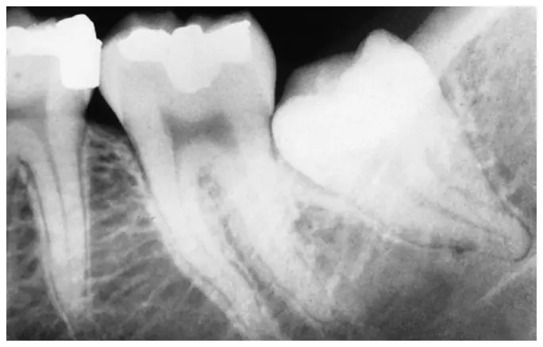
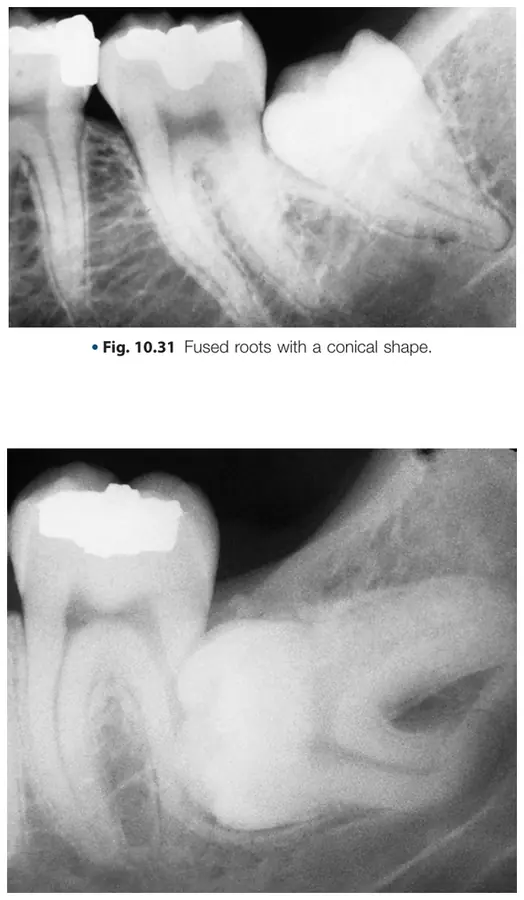

نسخه استخراجشده؛ ترجمه یا تأیید علمی انجام نشده است. وضعیت: captured
همانطور که مورفولوژی ریشه در دندان رویشیافته سختی کشیدن بسته را تعیین میکند، در دندان نهفته هم نقش عمدهای در تعیین درجهی سختی دارد.

اولین ملاحظه: طول ریشه — و اینجا یک بازهی دوطرفه داریم، نه یک قاعدهی یکطرفه.
دومین عامل: جوشخوردگی ریشهها. باید سنجیده شود که ریشهها به یک ریشهی مخروطی واحد جوش خوردهاند یا جدا و مجزا هستند. ریشههای مخروطی جوشخورده سرراستتر از ریشههای بهشدت جدا از هم برداشته میشوند.
انحنای ریشه. ریشههای بهشدت خمیده یا دیلاسره سختتر از ریشههای صاف یا کمی خمیده برداشته میشوند. جراح باید ناحیهی آپیکال دندان نهفته را در رادیوگرافی با دقت بررسی کند تا وجود ریشههای کوچک، غیرطبیعی و بهشدت قلابدار را ببیند — که اگر توجه ویژهای نشود احتمالاً میشکنند. و حتی با تمرکز اضافه حین جراحی، ریشههای قلابدار یک چالش برای خارج کردناند.

جهت انحنا — نکتهای که فقط با فکر کردن به مسیر خروج فهمیده میشود: در برداشتن نهفتگی مزیوانگولار، ریشههایی که بهآرامی در جهت دیستال خمیدهاند — یعنی در امتداد مسیر کشیدن — بدون نیرویی که بشکندشان خارج میشوند. ولی اگر ریشههای همین نهفتگی مزیوانگولار صاف یا به سمت مزیال خمیده باشند، اگر دندان پیش از تحویل سکشن نشود، ریشهها معمولاً میشکنند.
عرض ریشه در برابر عرض گردن. عرض کل ریشهها در جهت مزیودیستال باید با عرض دندان در خط سرویکال مقایسه شود. اگر عرض ریشه بیشتر باشد، کشیدن دشوارتر خواهد بود: باید استخوان بیشتری برداشته شود، یا دندان پیش از کشیدن سکشن شود.
فضای لیگامان پریودنتال. در بیشتر بیماران ابعادش طبیعی است، ولی گاهی پهنتر یا باریکتر میشود.